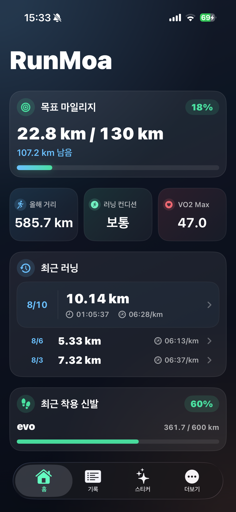

Goals and mileage
Track monthly and weekly goals alongside your accumulated distance.
APPLE HEALTH INTEGRATION
Review your Apple Health running records, charts, goals, and shoe mileage. Create running stickers to add to photos, and save routes as Flyover videos.
iPhone only · Free

RUN HISTORY, MANAGEMENT AND SHARING
Track monthly and weekly goals alongside your accumulated distance.
Review your route, pace, heart rate, cadence, elevation, and splits.
Check readiness, VO₂ Max, and predicted finish times for training reference.
Review personal records, assign shoes to runs, and keep track of mileage and notes.
Create run and weekly or monthly summary stickers, add them to photos, and save 3D route videos.
FAQ
RunMoa imports running workouts saved to Apple Health. Allow Health read access on your iPhone to view your workouts. Available details depend on the data saved to Apple Health.
No. RunMoa does not upload Apple Health workouts, route coordinates, heart rate samples, notes, or shoe data to a developer server. For an outdoor run with a route, it may send the first valid route coordinate and run start time to Apple Maps for a concise location name and to Apple Weather through WeatherKit for historical weather. Distributed builds use Firebase Analytics and Crashlytics without attaching those sensitive details.
No account is required. You can also explore a bundled sample run before granting Apple Health access.
No. They are training references only and are not intended for diagnosis or treatment.